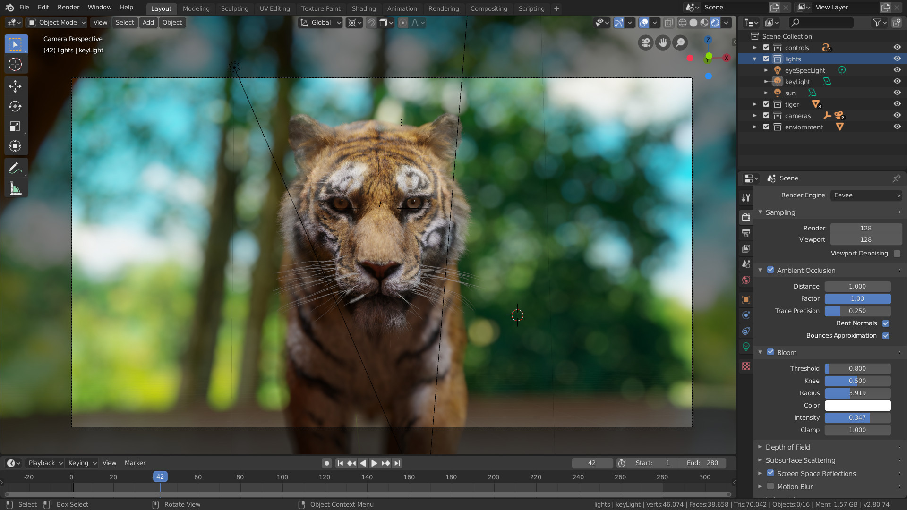

Welcome to Blender! Blender is a free and open-source 3D creation suite.
With Blender, you can create 3D visualizations such as still images, 3D animations, VFX shots, and video editing. It is well suited to individuals and small studios who benefit from its unified pipeline and responsive development process.
Being a cross-platform application, Blender runs on Linux, macOS, as well as Windows systems. It also has relatively small memory and drive requirements compared to other 3D creation suites. Its interface uses OpenGL to provide a consistent experience across all supported hardware and platforms.
Blender has a wide variety of tools making it suitable for almost any sort of media production. People and studios around the world use it for hobby projects, commercials, and feature films.
Check out the User Stories page on the Blender website for more examples.
- Blender is a fully integrated 3D content creation suite, offering a broad range of essential tools, including Modeling, Rendering, Animation & Rigging, Video Editing, VFX, Compositing, Texturing, and many types of Simulations.
- It is cross platform, with an OpenGL GUI that is uniform on all major platforms (and customizable with Python scripts).
- It has a high-quality 3D architecture, enabling fast and efficient creation workflow.
- It boasts active community support, see blender.org/community for an extensive list of sites.
- It has a small executable, which is optionally portable.
In 1988, Ton Roosendaal co-founded the Dutch animation studio NeoGeo. NeoGeo quickly became the largest 3D animation studio in the Netherlands and one of the leading animation houses in Europe. NeoGeo created award-winning productions (European Corporate Video Awards 1993 and 1995) for large corporate clients such as the multinational electronics company Philips. Within NeoGeo, Ton was responsible for both art direction and internal software development. After careful deliberation, Ton decided that the current in-house 3D tool set for NeoGeo was too old and cumbersome to maintain, and needed to be rewritten from scratch. In 1995 this rewrite began and was destined to become the 3D software creation we all know as Blender. As NeoGeo continued to refine and improve Blender, it became apparent to Ton that Blender could be used as a tool for other artists outside of NeoGeo.
In 1998, Ton decided to found a new company called Not a Number (NaN) as a spin-off of NeoGeo to further market and develop Blender. At the core of NaN was a desire to create and distribute a compact, cross-platform 3D application for free. At the time, this was a revolutionary concept as most commercial 3D applications cost thousands of dollars. NaN hoped to bring professional level 3D modeling and animation tools within the reach of the general computing public. NaN’s business model involved providing commercial products and services around Blender. In 1999 NaN attended its first SIGGRAPH conference in an effort to more widely promote Blender. Blender’s first SIGGRAPH convention was a huge success and gathered a tremendous amount of interest from both the press and attendees. Blender was a hit and its huge potential confirmed!
Following the success of the SIGGRAPH conference in early 2000, NaN secured financing of €4.5M from venture capitalists. This large inflow of cash enabled NaN to rapidly expand its operations. Soon NaN boasted as many as 50 employees working around the world trying to improve and promote Blender. In the summer of 2000, Blender 2.0 was released. This version of Blender added the integration of a game engine to the 3D application. By the end of 2000, the number of users registered on the NaN website exceeded 250,000.
Unfortunately, NaN’s ambitions and opportunities did not match the company’s capabilities and the market realities of the time. This over-extension resulted in restarting NaN with new investor funding and a smaller company in April 2001. Six months later NaN’s first commercial software product, Blender Publisher was launched. This product was targeted at the emerging market of interactive web-based 3D media. Due to disappointing sales and the ongoing difficult economic climate, the new investors decided to shut down all NaN operations. The shutdown also included discontinuing the development of Blender. Although there were clearly shortcomings in the then current version of Blender, such as a complex internal software architecture, unfinished features and a non-standard way of providing the GUI, the enthusiastic support from the user community and customers who had purchased Blender Publisher in the past, meant that Ton could not justify leaving Blender to fade into insignificance. Since restarting a company with a sufficiently large team of developers was not feasible, Ton Roosendaal founded the non-profit organization, Blender Foundation, in March 2002.
The Blender Foundation’s primary goal was to find a way to continue developing and promoting Blender as a community-based open source project. In July 2002, Ton managed to get the NaN investors to agree to a unique Blender Foundation plan to attempt to release Blender as open source. The “Free Blender” campaign sought to raise €100,000 so that the Foundation could buy the rights to the Blender source code and intellectual property rights from the NaN investors and subsequently release Blender to the open source community. With an enthusiastic group of volunteers, among them several ex-NaN employees, a fundraising campaign was launched to “Free Blender”. To everyone’s surprise and delight the campaign reached the €100,000 goal in only seven short weeks. On Sunday, October 13, 2002, Blender was released to the world under the terms of the GNU GPL. Blender development continues to this day, driven by a team of dedicated volunteers from around the world led by Blender’s original creator, Ton Roosendaal.
The start!
- 1.00 – January 1994: Blender in development at animation studio NeoGeo.
- 1.23 – January 1998: SGI version published on the web, IrisGL.
- 1.30 – April 1998: Linux and FreeBSD version, port to OpenGL and X11.
- 1.3x – June 1998: NaN founded.
- 1.4x – September 1998: Sun and Linux Alpha version released.
- 1.50 – November 1998: First Manual published.
- 1.60 – April 1999: C-key (new features behind a lock, $95), Windows version released.
- 1.6x – June 1999: BeOS and PPC version released.
- 1.80 – June 2000: End of C-key, Blender full freeware again.
- 2.00 – August 2000: Interactive 3D and real-time engine.
- 2.10 – December 2000: New engine, physics, and Python.
- 2.20 – August 2001: Character animation system.
- 2.21 – October 2001: Blender Publisher launch.
- 2.2x – December 2001: macOS version.
Converting the RST-files into pretty HTML pages.
Open a terminal to the folder ~/blender_docs and simply run:
make
This is the command you will always use when building the docs. The building process may take several minutes the first time (or after any major changes), but the next time you build it should only take a few seconds.
Once the docs have been built, all the HTML files can be found inside
~/blender_docs/build/html. Try
opening build/html/index.html in your web browser and read the manual:
open build/html/index.html
Now that you are able to build the manual, the next paragraph is about an optional quick build.
If you are working on a specific chapter of the manual, you can build it quickly using:
make <chapter name>
For example, to build only the documentation for the modifiers, use make modifiers. You can then view
this quick build by opening build/html/contents_quicky.html.
This will build very quickly, but it will mean your next complete build of all the chapters will be slow.